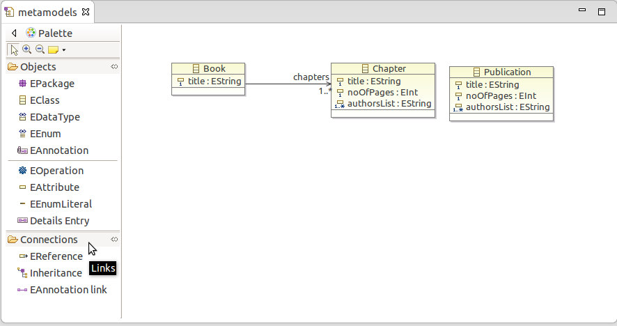
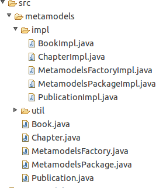

Simple Transformer (SiTra)
The Five Minutes SiTra tutorial with EMF
In the Five Minutes Tutorial, the metamodels of the source and destination were created manually as Plain Old Java Objects (POJOs). Advocates of high-level modelling may produce the metamodels in UML class diagrams for documentation and better communication. In such cases, we can create POJOs and factories to generate objects used in SiTra transformations automatically.
Eclipse Modeling Framework (EMF) is a well supported modelling framework for code generation. EMF has a wide range of capabilities. For example, we can use EMF to convert models between Java code, UML models, Ecore and XSD documents. See the official EMF website for links to tutorials and books about EMF. The aim of this tutorial is to explain how to
- Create Ecore models to produce a representation of the metamodels in class diagram format,
- automatically generate java code from the diagrams, and finally
- write a transformation to repeat the task carried out in Five Minutes Tutorial.
Download Eclipse Modelling Tool from the Eclipse website. Alternatively, you can install Eclipse Modelling Tool packages in your current installation of Eclipse. There are a number of good tutorials on EMF, among them:
- Eclipse Modeling Framework (EMF) - Tutorial by Lars Vogel and
- What every Eclipse developer should know about EMF by Maximilian Koegel
The following is a short description of the steps involved in the creation of the Ecore model for the Five Minutes Tutorial, use the above tutorials as cheatsheets to fill in the gaps.
Producing Ecore model of metamodels
-
After downloading and installing Eclipse Modelling Tool, create a project by going to File → new → Ecore Tools Project. Call your project FiveMinutes.
-
Right-click on FiveMinutes in Project Explorer pane and then file → new → ecore diagram. Call the ecore model metamodels. You should see the following Palette which has drag and drop components for producing classes (EClass), attributes (EAttribute), …

-
Click on EClass on Palette and then click on the drawing pane to produce three classes. Name them Book, Chapter and Publication. You can modify the name of the classes from Properties pane.
-
Right click on EAttribute in the Pallete and then click on the attribute fields of the class Book. Go to Properties. Change Name to title, Lower Bound to 1 and EType to EString [java.lang.String]. Setting the lower bound and upper bound to 1 enforces the model to have exactly one title attribute. Also add title attribute to both Chapter and Publication. Also add noOfPages attribute of type EInt [int] with Lower Bound to Chapter and Publication.
-
add the attribute authorsList of type EString to Chapter. Set the Lower Bound to 1 and the Upper Bound to . This will make sure that theauthorsList* is a collection of String. In the Properties pane click on the Advanced will bring all setting of the authorsList. Make sure the parameter Unique is set to true. This will ensure that the name of authors are unique. The parameter Upper Bound is set to -1, which is the same as upper multiplicity *. As a result, authorsList will be a set of Strings. Similarly add the attribute authorsList to Publication.
-
Click on EReference to produce an association from Book to Chapter. In Properties pane name the EReference to chapters, modify Lower Bound to 1 and Upper Bound to -1 to ensure that the association has the multiplicity of 1…* at the side that it connects to Chapter. At the end, your drawing pane should look like the following.

Automated code generation from the Ecore models
We shall start by creating an EMF Generator model.
- locate the file metamodel.ecore in the Project Explorer pane, right click New → other → EMF Generator Model. The file name is metamodels.genmodel. Click Next and you will be prompted to Select a Model Importer. Select Ecore model, load and click through to Next and Finish. In your Project Explorer pane you will end up with a new tree meamodel.genmodel. Click on it a new pane opens. In the newly opened pane right click on Metamodels and choose Generate Model Code. A directory src with two subfolder containing interfaces and their implementations will be created as follows.

Spend some time and explore the auto-generated code and the created POJOs. Produce a separate package, such as uk.ac.bham.cs, for your transformation files. The following code uses the produced factories for making source objects.
Generating Objects via factories
Run the above program to print the chapters and their attributes.
Running the transformations
The produced objects can now be used within a SiTra transformation. For a description of the transformation see Five Minutes Tutorial. Following the tutorial download the latest version of the SiTra and import it to your IDE. BookToPublication Transformation is slightly different from the version in the Five Minutes Tutorial, Firstly, created factories must be used to produce the destination objects. Secondly, the auto-generated code provides a set of get Methods that return instances of the variables representing the attributes. This is a bit different from using a set method in the Five Minutes Tutorial. For further information about the auto-generated code and the reason behind the style of implementation see the EMF website or the above tutorials.
New version of BookToPulication
Executing the transformation
Similar to Five Minutes Tutorial we can run the transformation.
Executing transformation
Running the above will produce
produced publication
News
Welcome to our new site!